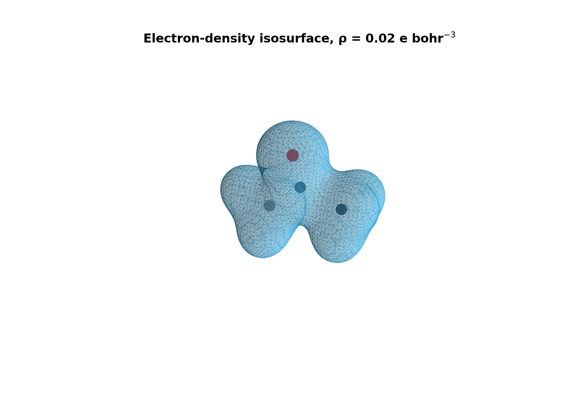
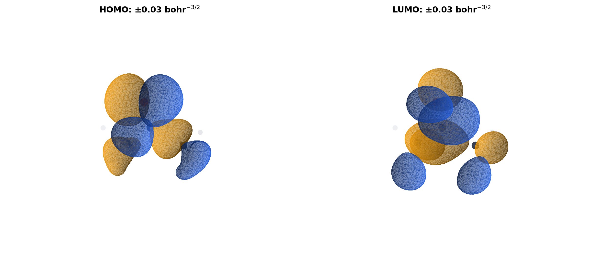

Volumetric Data on a Three-dimensional Grid
Cubeファイル
原子座標と三次元格子上のスカラー値を一つのASCIIファイルに格納し、電子状態計算から実空間解析・可視化へ受け渡します。
- 位置づけ
- 三次元場の交換形式
- 主な内容
- density、MO、ESP、spin density、RDG
- 主な接続先
- Multiwfn、VMD、Avogadro、py3Dmol
1. 概要
cubeは、分子構造と直方体または平行六面体のvoxel gridを記録するテキスト形式です。各格子点に一つ以上の実数を持てるため、同じ器に電子密度、軌道、静電ポテンシャルなど異なる場を保存できます。
.cubeは容器の形式です。値がなのか、なのか、ESPなのかを、ファイル名・コメント行・生成コマンドと一緒に保存します。
2. ファイル構造
基本構造は二つのコメント行、原子数とgrid原点、三本のgrid軸、原子情報、voxel値です。軸ベクトルは必ずしもCartesian軸と平行とは限りません。
comment line 1
comment line 2
N_atoms origin_x origin_y origin_z
N_x dx_x dx_y dx_z
N_y dy_x dy_y dy_z
N_z dz_x dz_y dz_z
Z_1 q_1 x_1 y_1 z_1
...
Z_N q_N x_N y_N z_N
value(0,0,0) value(0,0,1) ... value(Nx-1,Ny-1,Nz-1)| 領域 | 内容 | 確認点 |
|---|---|---|
| Header | コメント、原子数、原点 | 生成した物理量と計算条件 |
| Axes | 点数と一格子分のベクトル | 点数、方向、spacing、単位 |
| Geometry | 原子番号、核電荷相当値、座標 | 原子順序と座標系 |
| Data | 通常はz indexが最も速く変化する値列 | 総数がNx*Ny*Nzか |
3. 格子と単位
格子点は、原点と三本のstep vectorから定義されます。
Gaussian cubeの一般的な実装では座標と軸はatomic unitで扱われますが、負の格子点数をÅ指定の印として解釈する実装もあり、reader間の差があります。生成元の仕様を確認し、単位を推測で変換しません。
格子間隔を半分にすると、一辺方向の点数は約2倍、三次元の総点数とファイルサイズは概ね8倍になります。分子から十分なmarginを確保しつつ、目的に対して必要な解像度を選びます。
4. 格納する物理量
| 場 | 値の性質 | 代表的な表示 |
|---|---|---|
| 電子密度 | 通常は非負。空間積分は電子数に対応 | 一定密度の等値面 |
| 分子軌道 | 正負を持つ振幅。密度ではない | 正負二色の等値面 |
| spin density | 正負二色の等値面 | |
| 静電ポテンシャル | 核と電子の寄与を含むpotential | 電子密度等値面へのcolor mapping |
| RDG・NCI関連量 | 密度と微分から得る実空間関数 | 低RDG領域をsign(λ2)ρで着色 |
一つの軌道全体にを掛けても物理状態は変わりません。異なる計算のMO cubeを差し引く前に、軌道対応と位相を揃える必要があります。
5. 生成方法
Gaussian
checkpointをformchkでformatted checkpointへ変換し、cubegenで密度や軌道をgridへ評価します。MO番号やgrid指定は使用中のGaussian版のcubegenヘルプで確認します。
formchk job.chk job.fchk
cubegen 0 density=scf job.fchk density.cube -2 h
cubegen 0 MO=Homo job.fchk homo.cube -2 hPySCF
from pyscf import gto, scf
from pyscf.tools import cubegen
mol = gto.M(atom="O 0 0 0; H 0 -0.757 0.587; H 0 0.757 0.587",
basis="def2-svp")
mf = scf.RHF(mol).run()
dm = mf.make_rdm1()
cubegen.density(mol, "water_density.cube", dm, resolution=0.20)
cubegen.mep(mol, "water_esp.cube", dm, resolution=0.20)
homo = mol.nelectron // 2 - 1
cubegen.orbital(mol, "water_homo.cube", mf.mo_coeff[:, homo],
resolution=0.20)ORCA・Multiwfn
ORCAは%plotsでGaussian_Cubeを指定するか、計算後にorca_plot job.gbw -iを使います。Multiwfnはfchk、wfn/wfx、molden等を読み込み、軌道・密度・各種実空間関数をcubeへ出力できます。
6. cubeの演算
差電子密度などは、同一grid上の値を点ごとに演算します。
演算前に、原点、三本の軸ベクトル、各軸点数、原子配置、単位、電子密度の定義を一致させます。fragmentを別々に自動grid生成すると範囲が変わるため、複合体と同一の原点・extent・resolutionを明示します。
異なるgridを補間して揃えると数値誤差と境界効果が入ります。可能なら同一gridへ再出力し、補間した場合は方法と誤差評価を記録します。
7. 可視化
- MO・spin density: 正負を同じ絶対isovalueで二色表示する。
- ESP: ESP自体の等値面ではなく、一定電子密度面へ値をmappingする目的を区別する。
- NCI: 形状を定めるcubeと、表面色を定めるcubeを対応させる。
- 比較図: 分子間でisovalue、カラーレンジ、視点を固定する。
Web・Notebookではpy3Dmol、実空間解析ではMultiwfn、NCI専用処理ではNCIplotへ進みます。
8. 数値検証
- Headerの物理量、計算method、orbital番号を確認する。
- 格子点数とdata値数が一致するか確認する。
- 原子がgrid境界に近すぎないか確認する。
- 電子密度ならvoxel volumeを掛けた数値積分を電子数と比較する。
- 差分なら各入力cubeの原点・axis・shapeを機械的に比較する。
- 可視化画像とともに元cube、生成コマンド、isovalueを保存する。
Reproducible Example
9. アセトンの電子密度・HOMO・LUMO・ESP
RDKitで作成したアセトン構造に対し、PySCF 2.14.0でB3LYP/def2-SVP 一点計算を行い、0.24 Å間隔、4.0 Å marginのCubeを出力しました。
Cubeを読み込んでいます...
水色の半透明面: 電子密度 ρ = 0.02 e bohr-3。
青: 正位相、橙: 負位相。等値面は ±0.03 bohr-3/2。
青: 正位相、橙: 負位相。色は電荷ではありません。
ドラッグで回転できます。ESPは電子密度面を別のESP Cubeで着色しています。 3Dmol.js 2.5.5


図の見方
- 電子密度面は指定した電子密度値を満たす境界であり、原子半径そのものではありません。等値を変えると外形も変化します。
- HOMO/LUMOの青と橙は波動関数の位相です。正電荷・負電荷を意味せず、色が切り替わる境界は節に対応します。
- ESPはρ = 0.02の電子密度面上へ写像しています。赤は負、青は正のポテンシャルですが、反応位置は軌道・立体・溶媒などと併せて判断します。
- この構造はDFT最適化・振動数解析を行った研究用構造ではなく、Cube操作を示す一点計算の例です。
10. 参考資料
- PySCF tools.cubegen API
- ORCA 6.1 Manual: Orbital and Density Plots
- h5cube: Gaussian CUBE File Format specification
- GaussView 6 Help: Generating and Manipulating Cubes
最終更新: